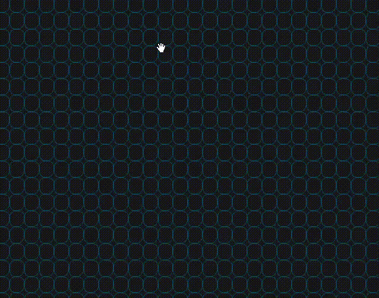

C'est quoi le jeux de la vie? 🤔
En gros c'est un automate cellulaire inventé par le mathématicien John Conway. Il se déroule sur une grille bidimensionnelle où chaque cellule peut être soit vivante, soit morte. L'évolution du jeu est déterminée par des règles simples appliquées à chaque génération.
Règles du Jeu de la Vie 📜
- Une cellule morte avec exactement trois voisins vivants devient vivante à la génération suivante.
- Une cellule vivante avec deux ou trois voisins vivants reste vivante à la génération suivante.
- Toute autre cellule vivante meurt à la génération suivante (solitude ou surpopulation).
- Les cellules mortes restent mortes, sauf si elles ont exactement trois voisins vivants.
Comment jouer? 🎲
Pour jouer, il suffit de cliquer sur les cellules pour les faire vivre ou les tuer. Vous pouvez aussi choisir un modèle de départ dans la liste déroulante.
